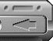
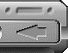

Experimente con toda libertad con este proyecto o cree el suyo propio. En el panel del proyecto, haga doble clic en WelcomeFrame.java para abrirlo y empezar a diseñar o modificar una interfaz de usuario.
La documentación de JBuilder incluye numerosos tutoriales que muestran cómo utilizar JBuilder para desarrollar aplicaciones. Los temas que tratan estos tutoriales van desde una descripción general básica de la compilación y la depuración hasta la utilización de XML para acceder a datos y manipularlos. Si desea más información sobre los tutoriales, seleccione Ayuda|Tutoriales de JBuilder.
El directorio samples de la instalación de JBuilder contiene ejemplos que puede estudiar. Los ejemplos van desde simples programas que utilizan componentes Swing hasta complejos programas con DataExpress, EJB y aplicaciones web. Si desea más información sobre los ejemplos, consulte Información resumida sobre los ejemplos principales de JBuilder o seleccione Ayuda|Ejemplos de JBuilder.
Si desea información adicional sobre JBuilder, consulte:
Introducción a JBuilder: Aprendizaje de JBuilder